Equilíbrio entre corpo e mente
Clínica de fisioterapia e osteopatia na Charneca de Caparica. Um cuidado atento, ajustado a cada pessoa.
Ou ligue 962 987 680
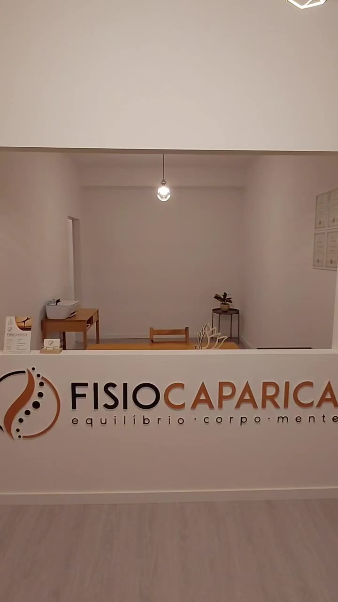
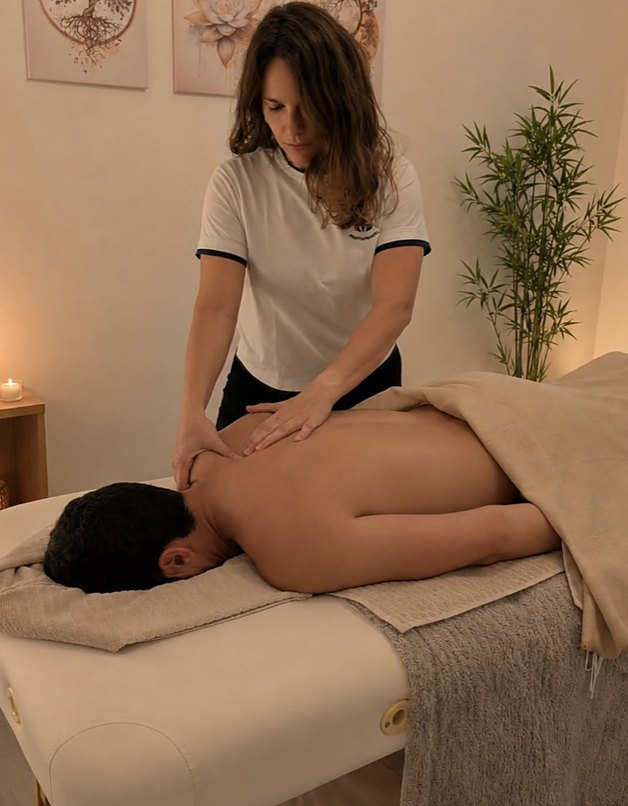
Cinco formas de recuperar o equilíbrio
Escolha uma área. A forma de trabalhar é sempre a mesma: ouvir, avaliar e só depois propor.
-
Reabilitação orientada para o seu caso, do pós-operatório às queixas do dia a dia.
- Pós-cirúrgica
- Ortopédica
- Pélvica
- Oncológica
-
Uma abordagem manual que olha para o corpo como um todo, e não só para o sítio onde dói.
-
Exercício acompanhado, ajustado a cada pessoa e à fase em que se encontra.
-
Técnica manual suave, feita com ritmo e calma, conforme a indicação do profissional.
-
Um tempo para o corpo abrandar, num espaço calmo e acolhedor.
Texto ilustrativo. A indicação de cada tratamento depende sempre da avaliação por um profissional de saúde.
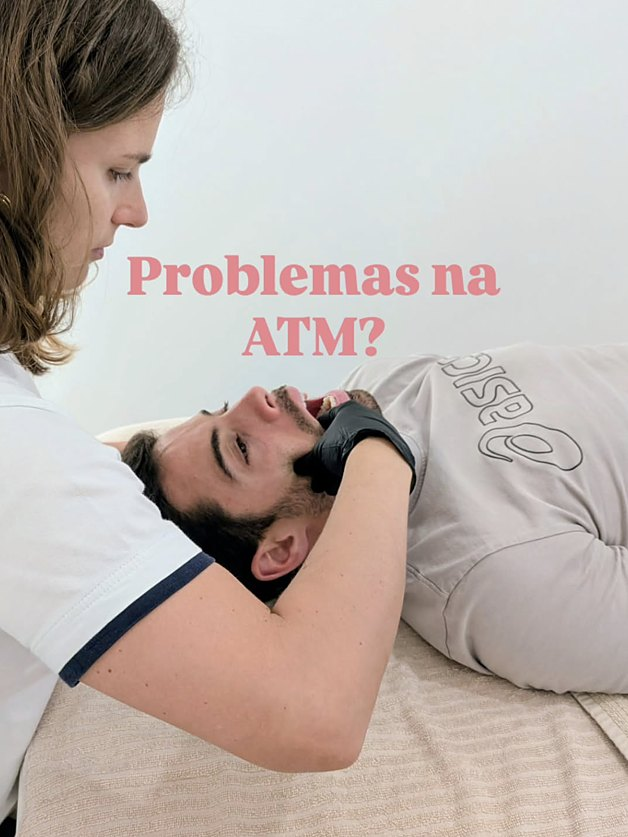
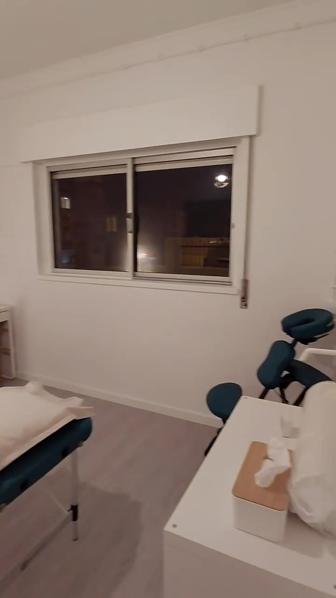
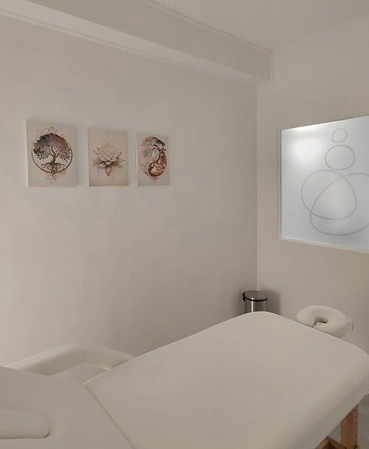
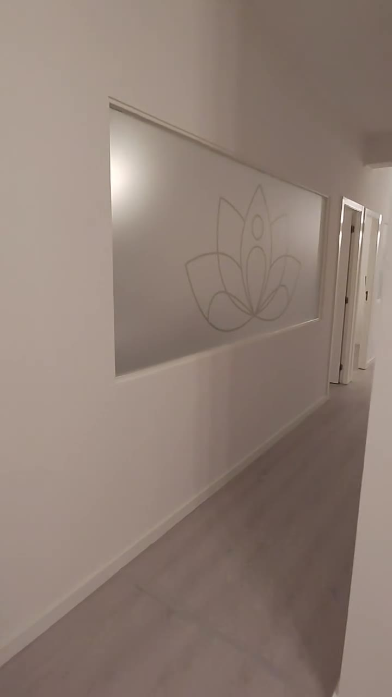
Equilíbrio, pedra a pedra
Ouvimos
Começamos por perceber a sua história, as queixas e o que quer voltar a fazer.
Avaliamos
Uma avaliação cuidada para perceber o que está por trás das queixas.
Tratamos
Um plano ajustado a si, com técnicas manuais, exercício ou ambos, conforme a avaliação.
Acompanhamos
Reavaliamos, ajustamos e damos-lhe ferramentas para manter o equilíbrio.
Passos ilustrativos, a confirmar com o cliente.
Um espaço claro e calmo
Paredes brancas, luz suave e salas pensadas para a pessoa chegar, respirar e ser ouvida.
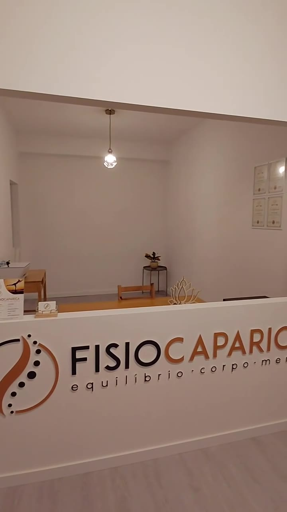
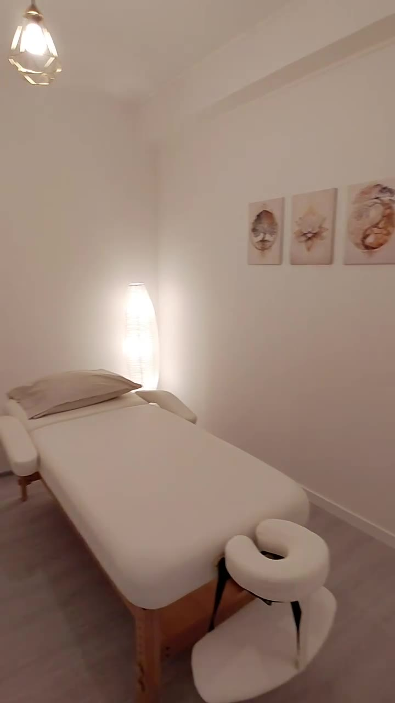
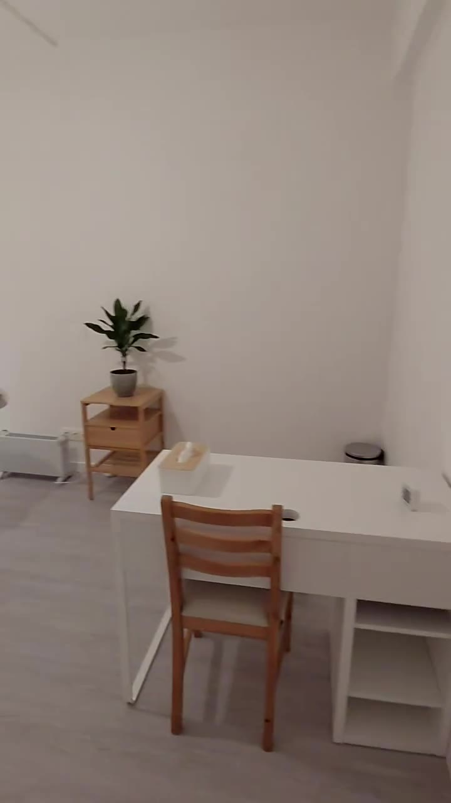
Rua Presidente Arriaga 15A · Charneca de Caparica, Setúbal · 2820-401
As pessoas que cuidam de si
Uma equipa de fisioterapeutas com formação e áreas de interesse diferentes, a trabalhar para o mesmo equilíbrio.
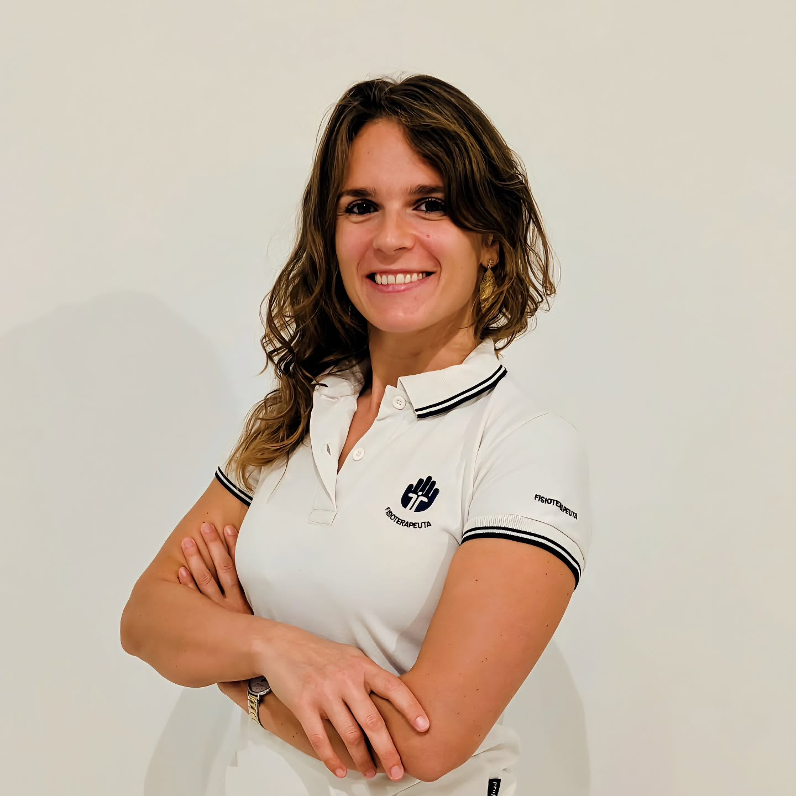
Quem lidera a equipa
Apresentação da direção clínica, percurso e áreas de atuação. nome e texto a confirmar com o cliente
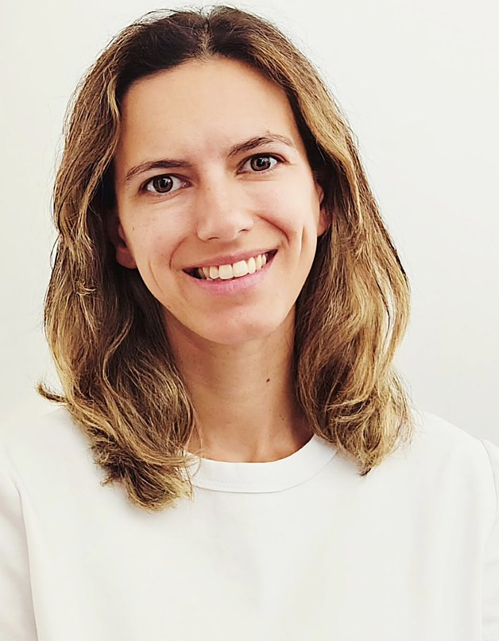
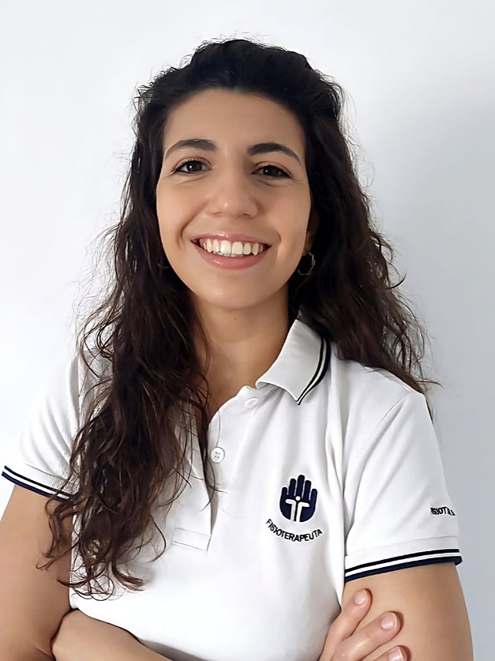
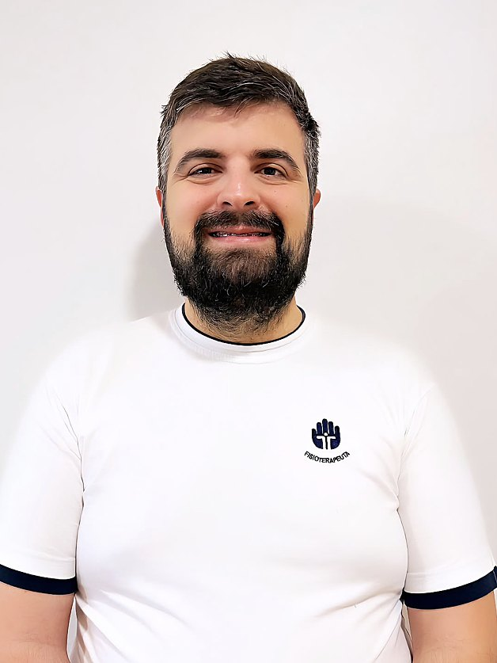
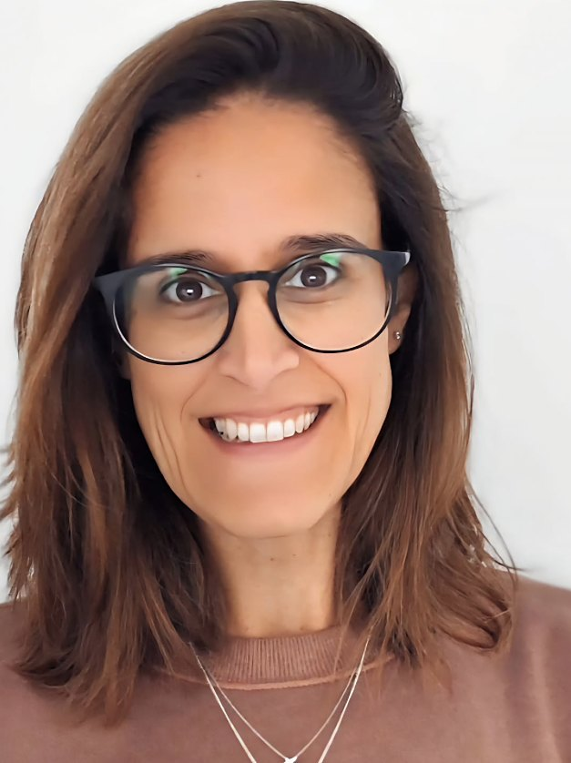
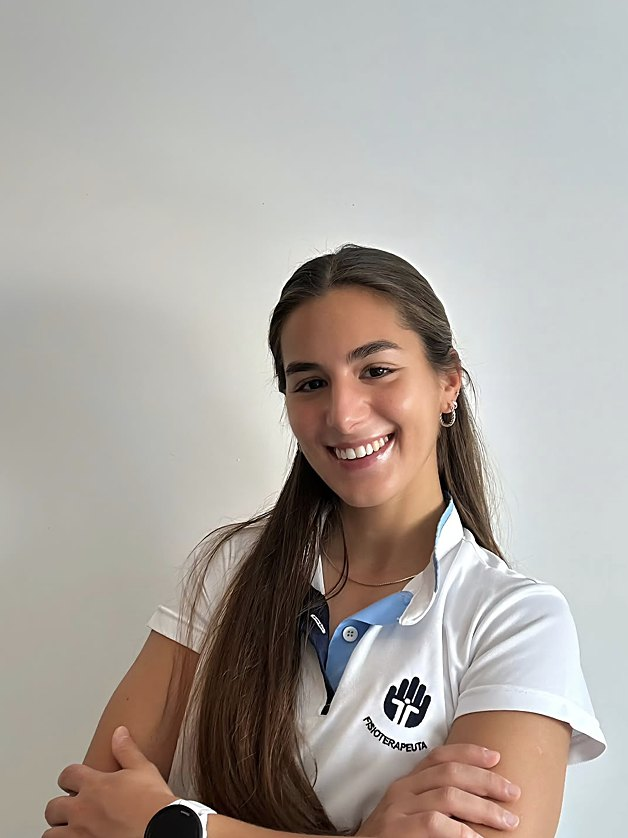
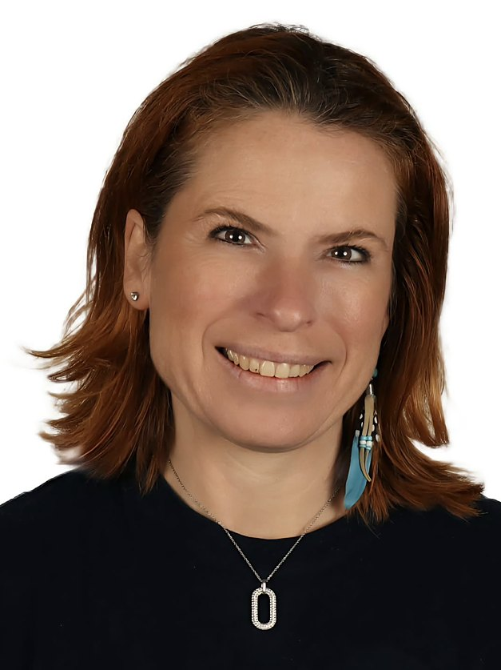
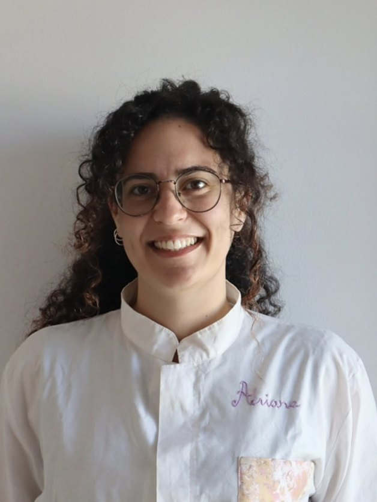
Vamos começar?
Ligue-nos ou deixe o seu pedido. Respondemos para combinar o melhor momento para a sua primeira consulta.
962 987 680- Morada
- Rua Presidente Arriaga 15A
Charneca de Caparica, Setúbal · 2820-401
Abrir no mapa - Horário
- a confirmar com o cliente
- a confirmar com o cliente
- a confirmar com o cliente